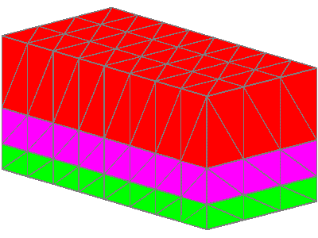
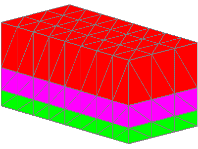

ROUTINE: stack
/ layers

*******************************************************************
* Example 1
* file: demo_tri_simple.in
* stack/layers
* no buffers, no refinement, no truncation
*******************************************************************
* STACK TRI LAYERS into cmo name cmo1
* read 4 AVS triangulated surfaces into 3 material units
* stack and pinchout if layers cross
* label unit colors with 1 on bottom and 3 on top
* details:
* the syntax stack/layers/avs
* means stack a list of AVS triangle surface files
* this is followed by a list of files with integers after each
file
* the first file in the list is the bottom, the last is the top
* the first integer after each file name is the material value
* (a second integer would be the refinement number)
* after the list of surface files, there are command options
* the option "pinch" represents the thinness of a layer before
* it is pinched out. If a layer crosses, the lower surface truncates.
*********************************************************************
cmo create cmo1
stack/layers/avs surf-12.inp 1 surf-5.inp 2 surf5.inp 3 surf25.inp
pinch 0.
Layers to create:
4
Max material number:
4
Reading 4 surface files...
................................................................
surface name
layer color type llcorner zic
surf-12.inp
1 1 -1
1) -1.200000E+01
surf-5.inp 2 2
0 37) -5.000000E+00
surf5.inp 3 3
0 73) 5.000000E+00
surf25.inp 4 4 -2
109) 2.500000E+01
Elements per layer:
48 total: 192
Nodes per layer:
36 total: 144
STACK DONE: 4 files read out of 4
................................................................
*********************************************************************
* STACK to PRISM to TET
* convert stacked layers in cmo1 into a tet grid named cmotet
* The stacked layers are filled to create a prism grid.
* The prism grid is then converted to a tet grid.
* hextotet will check cmo for mesh type then use hextotet/6
*********************************************************************
stack/fill/cmopri/cmo1/
hextotet// cmotet / cmopri
boundary_components
1 different boundary components identified.
2 is a representative vertex
finish
LaGriT successfully completed

cmo create cmo1
stack/layers/avs surf-12.inp 3 surf-5.inp 2 surf5.inp 1 surf25.inp
1
................................................................
surface name
layer color type llcorner zic
surf-12.inp
1 3 -1
1) -1.200000E+01
surf-5.inp
2 2 0
37) -5.000000E+00
surf5.inp 3 1
0 73) 5.000000E+00
surf25.inp
4 1 -2
109) 2.500000E+01
Elements per layer:
48 total: 192
Nodes per layer:
36 total: 144
STACK DONE: 4 files
read out of 4
................................................................


********************************************************
* file: demo_quad_buffers.in
* stack/layers
* buffers, truncation, no refinement
********************************************************
* STACK QUAD LAYERS into cmo named cmo1
* Read 6 AVS quad surfaces into 5 material units
* label unit colors with 1 on bottom and 5 on top
* stack and pinchout if layers closer than .19 meters
* add a buffer layer .2 meters above and below each interface
* truncate by 5th file to read
cmo create cmo1
stack/layers/avs &
q-1.inp 1 &
q0.inp 2 &
qhole.inp 3 &
q3.inp 4 &
qtop.inp 5 &
q5.inp 5 &
truncate 5 / buffer .2 / pinch .19
................................................................
surface name
layer color type llcorner zic
q-1.inp 1 1 -1
1) -1.000000E+00
buffer 2 1
1 34) -2.000000E-01
q0.inp 3 2
0 67) 0.000000E+00
buffer 4 2
1 100) 2.000000E-01
buffer 5 2
1 133) 8.000000E-01
qhole.inp 6 3
0 166) 1.000000E+00
buffer 7 3
1 199) 1.000000E+00
buffer 8 3
1 232) 1.000000E+00
q3.inp 9 4
0 265) 1.000000E+00
buffer 10 4 1
298) 1.000000E+00
buffer 11 4 1
331) 1.000000E+00
qtop.inp 12 5 0
364) 1.000000E+00
buffer 13 5 1
397) 1.200000E+00
q5.inp 14 5 -2
430) 5.000000E+00
Elements per layer:
20 total: 280
Nodes per layer:
33 total: 462
Layers truncated by qtop.inp layer
12
STACK DONE: 6
files read out of 6
STACK DONE:
8 layers created for total 14
................................................................
* STACK to HEX to TET
* convert stacked layers in cmo1 into a tet grid named cmotet
stack/fill/cmohex/cmo1
hextotet// cmotet / cmohex
* CHECK the GRID
* boundary_components should return 1 boundary
* otherwise there are holes in the mesh
quality
boundary_components


********************************************************
* file: demo_tri_trunc.in
* stack/layers
* slope truncation, refinement, no buffers
********************************************************
* STACK TRI LAYERS into cmo named cmo1
* Read 5 AVS triangulated surfaces into 4 material units
* label unit colors with 1 on bottom and 3 on top
* stack and pinchout if layers cross
* Add two layers for refinement in second unit
* Note layer type attribute:
* -1 is bottom, -2 is top surface
* 0 is surface read from file
* 1 is layer derived between surface at constant distance
* 2 is layer derived between surface at proportional distance
cmo create cmo1
stack/layers/avs &
surf-12.inp 1
&
surf-5.inp 2
&
surf5.inp 3
2 &
surf2_slope.inp 4 &
surf25.inp 4
&
truncate 4 / pinch 0.
................................................................
surface name
layer color type llcorner zic
surf-12.inp
1 1 -1
1) -1.200000E+01
surf-5.inp 2 2
0 37) -5.000000E+00
refine 3 2
2 73) -1.666667E+00
refine 4 2
2 109) 1.666667E+00
surf5.inp 5 3
0 145) 5.000000E+00
surf2_slope.inp
6 4 0
181) 1.800000E+01
surf25.inp 7 4 -2
217) 2.500000E+01
Elements per layer:
48 total: 336
Nodes per layer:
36 total: 252
Layers truncated by surf2_slope.inp layer
6
STACK DONE: 5 files read out of 5
................................................................
* STACK to PRISM to TET
* convert stacked layers in cmo1 into a tet grid named cmotet
stack/fill/ cmopri /cmo1
hextotet// cmotet / cmopri
* CHECK the GRID
* boundary_components should return 1 boundary
* otherwise there are holes in the mesh
cmo select cmotet
quality
boundary_components
finish